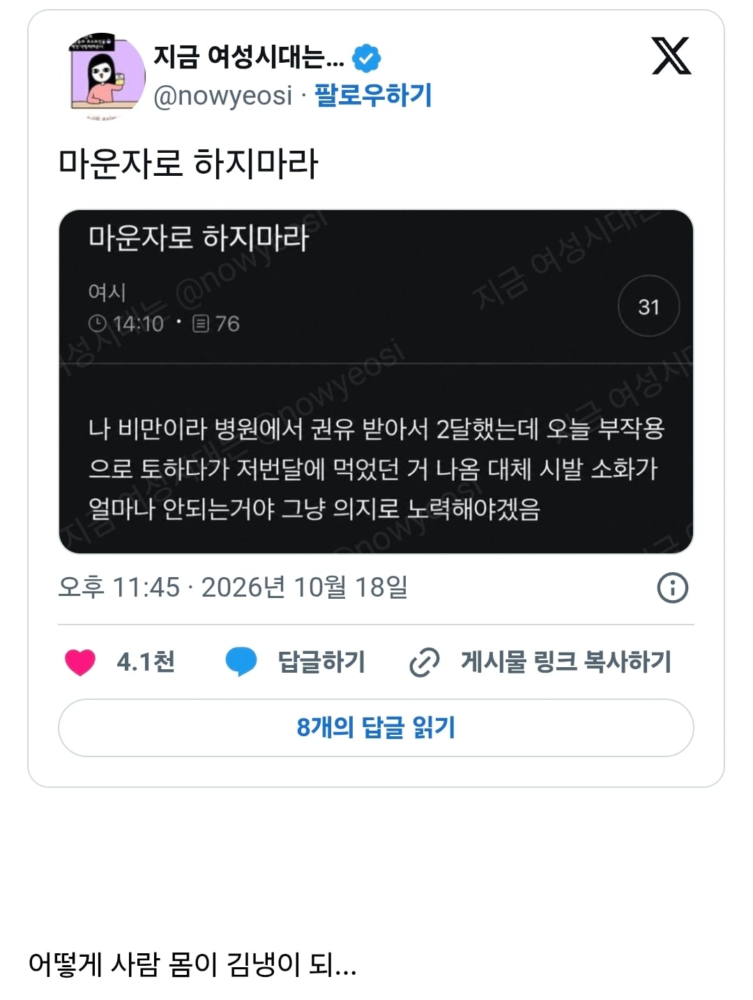

능지가 처참한거냐 아니면 한미 직원이 작업치는거냐

능지가 처참한거냐 아니면 한미 직원이 작업치는거냐
쇳덩이 먹음?
저번달이랑 같은거 먹었겠지
그정도면 사람이 아니라 좀비상태 아니냐? 마운자로가 네크로맨서 작품이란건가
뭐 플라스틱 처먹었냐?
항문으로 임신한다는 년이랑 같은년이네
오대수 아님?
저번 달에 먹은게 기억나???? 그리고 매일매일 매 끼니마다 다른걸 먹는거야??? 궁금하네...
지난 달 나왔다고 하면, 10월 1일날 토한거냐? 9월 30일 먹은거고?? 팩트는 팩트니까
몸 안에서 곰팡이 슬겠다 ㅋㅋ
군만두만 먹었나본데
냉장고 외삼? 마운자로하면되는데
샴푸쓰면 자궁에서 샴푸냄새 난다고 하고 몇년 묵은 숙변이 있다고 믿는게 저런 애들이냐?
멍청한 사람들이 기분 나빠하지 않도록 똑똑한사람들이 침묵당하는 시대에 살고 있다더니
틀린말은 아닌가보다
30일날 저녁에 밥먹고 1일 새벽에 토했나
그정도면 안에서 썩었겠다
걍 여초 특유의 밑도 끝도 없이 부풀리기 유머 같은데 왤케 다들 화났음
저번달에 먹은걸 이번달에도 계속먹었겠지
출처 여시 끄덕
산채로 삼키는 뱀도 저렇게는 못하겠다